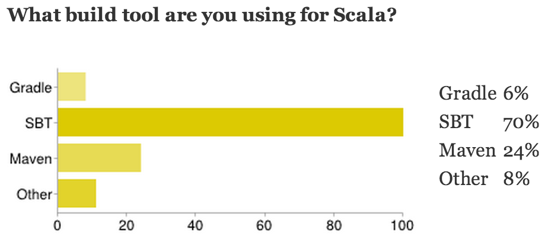

Scala Basics
Running Scala
- Compiled to Java bytecode
- Read-Eval-Print-Loop (REPL)
Essentials
- Every value is an object
- Everything is an expression (evaluates to a value)
- Every operation is a method call
Everything is an expression
- No statements
- Reduces the need for return and side-effects
Classes
When compiled, this class will look and behave exactly like the
obvious translation to a Java class. No glue code necessary.
Traits
- Like Java interfaces, but in addition
- allow concrete methods, fields, types
- Like Scala classes, but without constructor parameters
- Allow (a form of) multiple inheritance
What is FP?
- Use of functions (in the mathematical sense)
- referential transparency (no side-effects)
- Immutable objects
- Functions are values
Scala as a Functional Programming Language
- Use val instead of var
- Immutable collections in the standard library
- Leverage function literals and closures
Higher-Order Functions
- Functions that take or return functions
- Almost eliminate the need for loops over collections
Higher-Order Functions: Examples
Everything is an object
- Closures are objects, too
- Instances of trait
Function1[A, B] (compiler generated)
Syntactic Sugar
- Why can I call
succ(10)?
f(args) is desugared to f.apply(args)- You can define your own
apply methods
- ...can I subclass
FunctionN?
Function Subtypes
- Yes! Many collections are functions.
- Sequences are
Int => T
- Sets are
T => Boolean
- Maps are
K => V
Collections
- Generic (
List[T], Map[K, V])
- Mutable and immutable implementations (default is immutable)
- Uniform return type principle
- No compiler magic!
For-comprehensions
- More general than for-loops
- Used to iterate, filter and generate new collections
For-comprehensions
- Translated to calls to
filter, map, flatMap
- Readily available to any class implementing those methods
- Can be used to query a database
- Implement
filter, map, flatmap to generate and forward SQL
- SLICK, Squeryl
Pattern matching
- A way to match and deconstruct structured data
- A powerful
switch statement (expression, really)
Scala Open Source Project
- Scala compiler, standard library, and modules open-source (BSD license)
- Contributions
Scala modules
- scala-swing
- scala-async
- scala-pickling
- scala-parser-combinators
Building and Testing
- Testing
- ScalaTest
- specs2
- ScalaCheck: generate random test inputs
- any Java testing framework
- Building
- Build tools: sbt, Maven, Gradle, ant, ...
- IntelliJ Survey at Scala Days 2013 (blog):

ScalaCheck: Property-based testing
←
→
#
/